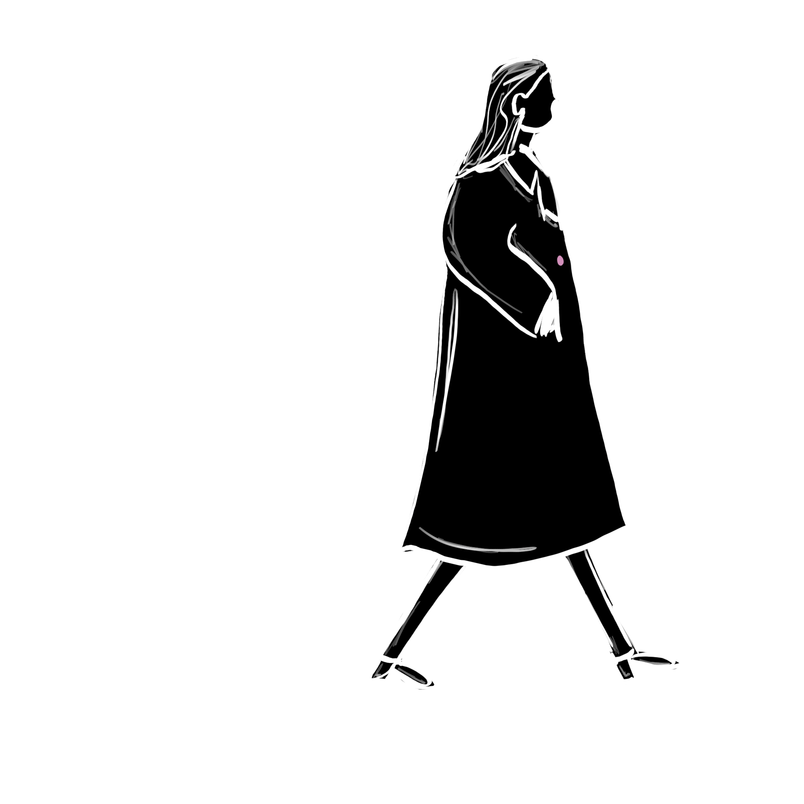
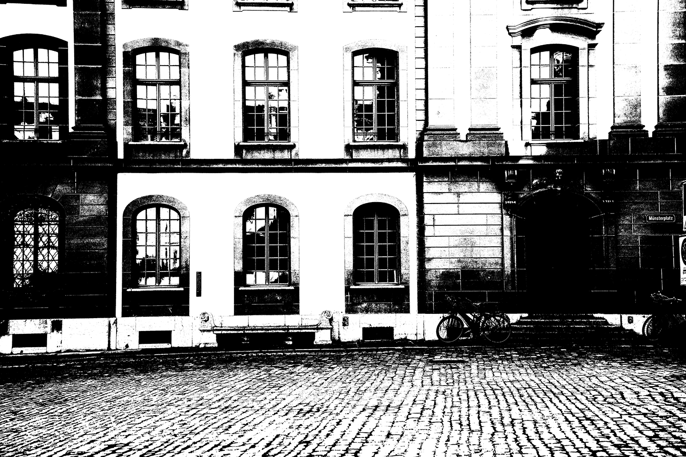
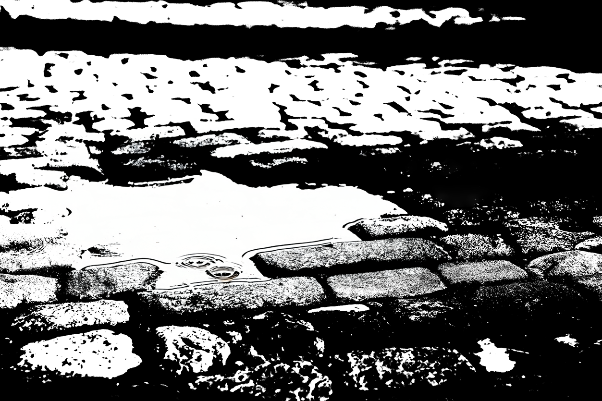
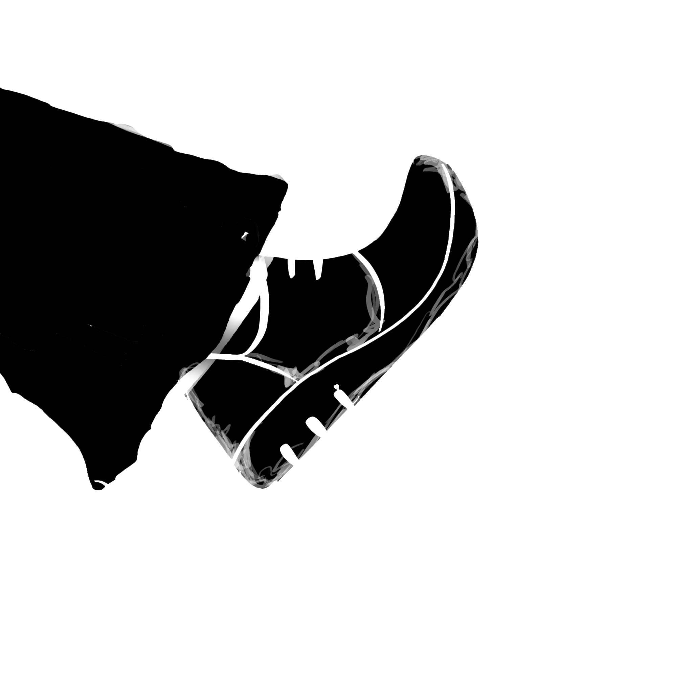

C'était un matin venteux dans la vieille ville de Berne, lorsqu'un petit bouton pendait doucement au manteau de sa propriétaire. Ensemble, ils quittèrent la maison. Le bouton tenait encore – pour l'instant.



